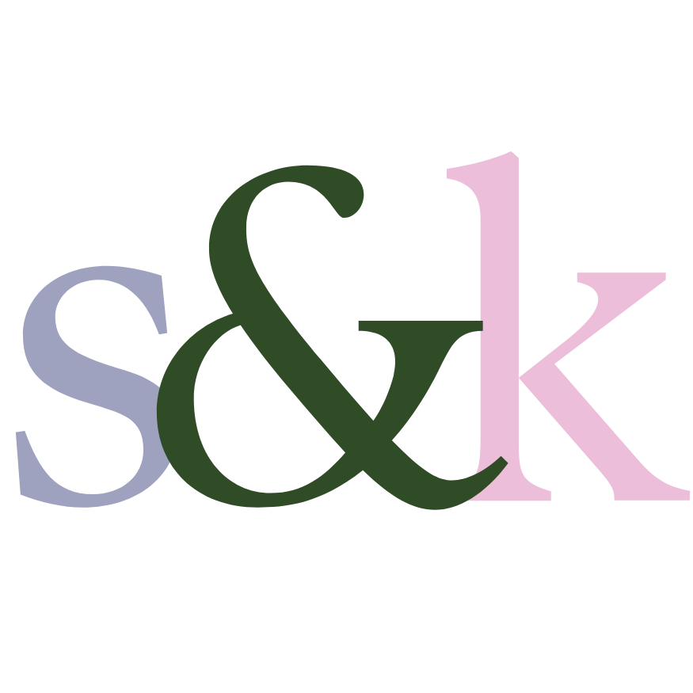
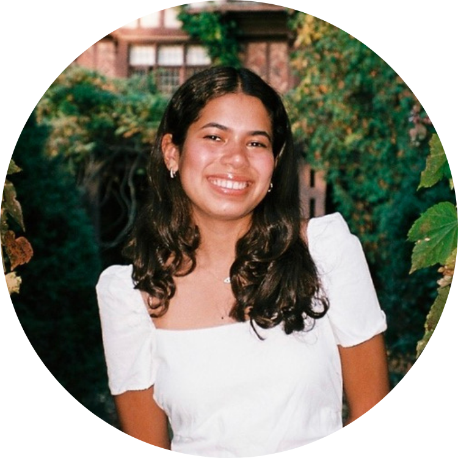
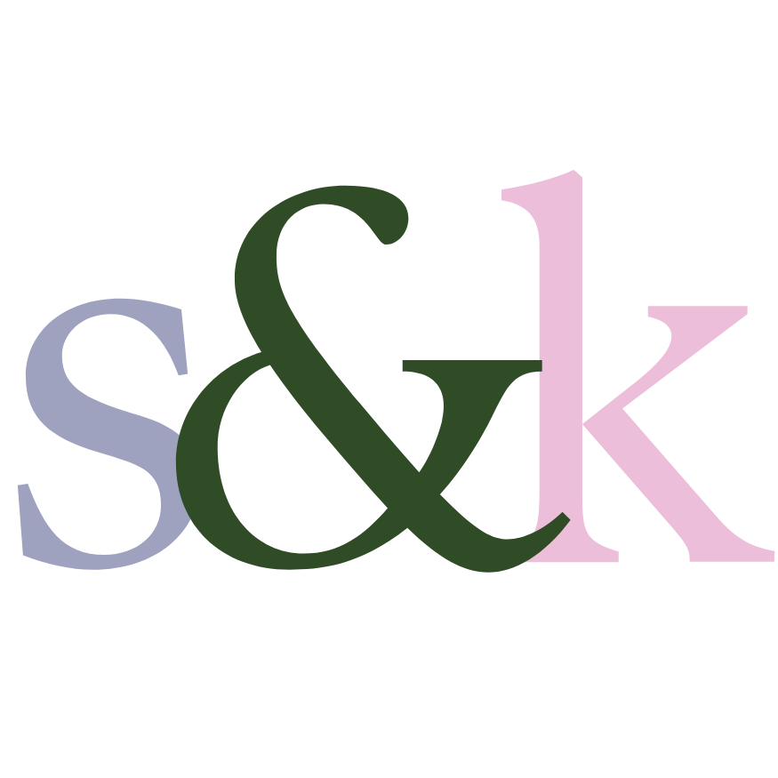
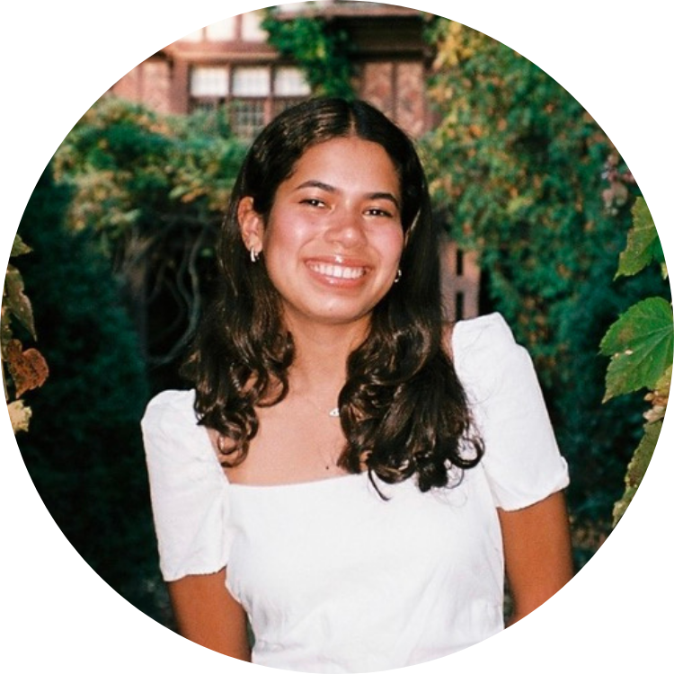

We’re Shivani & Kayla, two students at the Worcester Polytechnic Institute. This site aims to document our journey in Visual Rhetoric (WR2310) during c-term of 2025, featuring a site we coded in HTML and CSS. To learn more, visit our “meet the team” page, or the blog posts featured in the "Blog" tab. Cheers, and enjoy!